Side-Laced Shoe
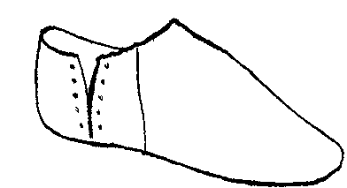
Shoes and Pattens Figure 26. Sole is cowhide, the upper is calf (SH 74 [467] <159>, Waterfront III, c.1210) (illustration after Mitford).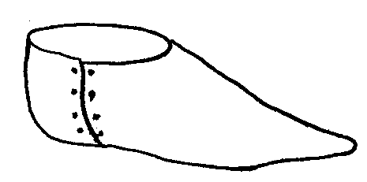
Thomas A Thomas type 7 (78/59/28 Woolworth's Site)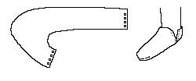
Schanck (c1200-1400)There is also a side laced shoe depicted under Long Toed Shoe.
Side-Laced Ankle Boot
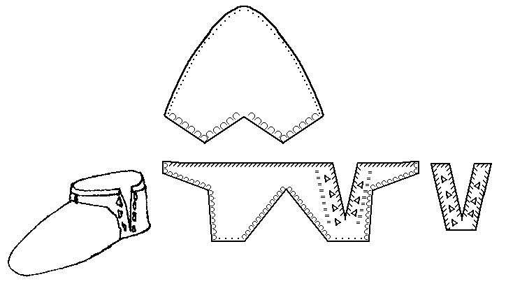
Shoes and Pattens Figure 27, 89. Sole is either calf or cowhide, the upper is sheep or goat (SH 74 [484] <246>, Waterfront III, c.1210) (illustration after Mitford).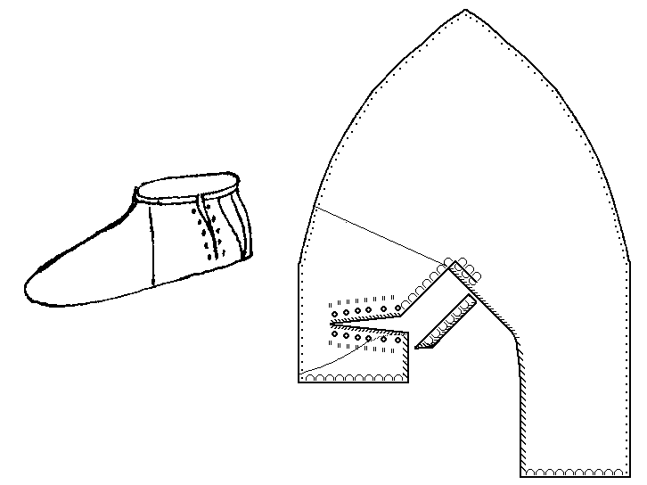
Shoes and Pattens Figure 28,90. Upper is calfskin (SWA 81 [2056] <4537>, 1270-9) (illustration after Mitford).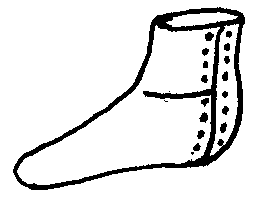
Thomas A Thomas type 1(c) (78/51/47)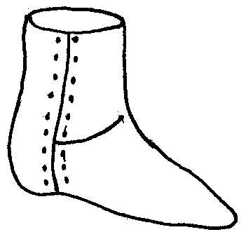
Thomas A Thomas type 1(c) (A/1012/7 Opera House)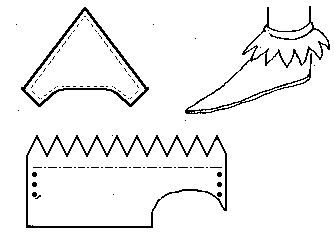
This decorative cuffed shoe is not based on any archeological examples, but is an indication of how such a shoe might be made. It may be made with a rand. The basic design is MY estimate of the pattern, and may not be absolutely accurate.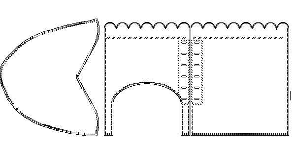
This decorative cuffed shoe design is based on one found in the Museum of London, Eagle Wharf Road (SYM 88 [157] <318>). It appears to be 15th century in origin. The upper appears to be calfskin.Side Laced Boot
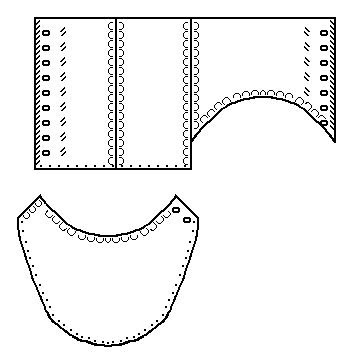
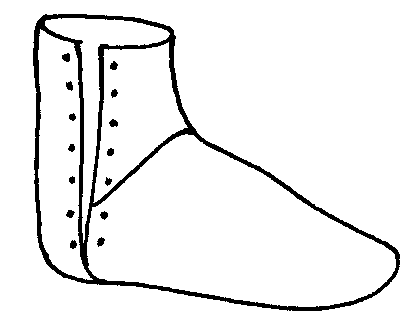
Shoes and Pattens, figure 68 "Early 15th century boot" A child's boot with a sole of cow hide, and an upper of calf. (TL 74 [368] <1494> Group G15, c.1440). Basic design layout is my estimation and may be in error. (Exterior illustration after Mitford)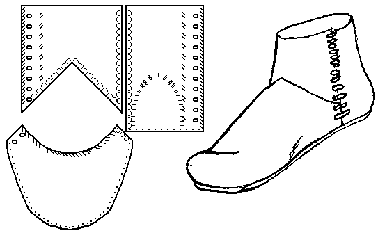
Shoes and Pattens, figure 70, 108 "Early 15th century boot" A boot with a sole of cow hide, and an upper of calf. The lacing reinforcement is of calf. (TL 74 [275] <3324> Group G15, c.1440) (illustration after Mitford).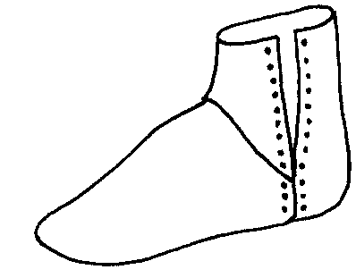
Shoes and Pattens, figure 59, 69 "Early 15th century ankle-shoe" An ankle-shoe with a sole of cow hide, and an upper that may be deer, sheep or goat. (TL 74 [368] <1494> Group G15, c.1440) (illustration after Mitford).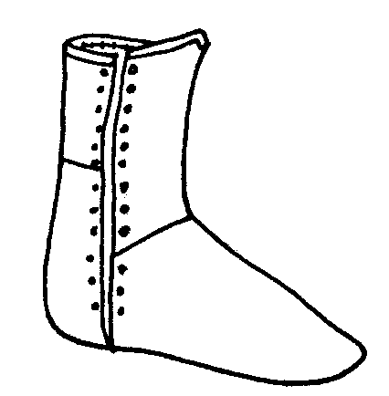
Shoes and Pattens, figures 35, 40 A child's boot, this has an upper made from calf, a sole made from cattle, and a heel stiffener of goat or sheep (BC 72 [250] <4028> Dock Construction, c1330-50) (illustration after Mitford).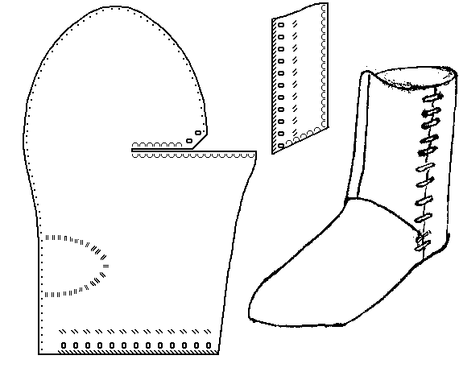
Shoes and Pattens, figures 39, 97 This boot has an upper and sole made from calf. (BC 72 [250] <4028> Dock Construction, c1330-50) (illustration after Mitford)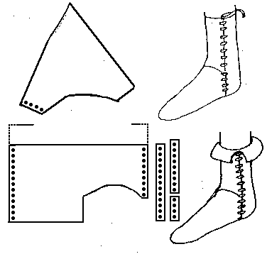
This cuffed boot is not based on any archeological examples, but is an indication of how a cuffed boot might work based on "Fall of Acre". Laced boots designs like this are found in at least one painting of "Ralph Neville". Boots of this era should be made with a rand.Footwear of the Middle Ages - Historical Shoe Designs/Number 25, by I. Marc
Carlson. Copyright 1996
This page is given for the free exchange of information, provided the Author's Name is
included in all future revisions, and no money change hands, other than as expressed in
the Copyright Page.
{kind=link}
{kind=link}
{kind=link}
{kind=link}
{kind=link}
{kind=link}
{kind=link}
{kind=link}